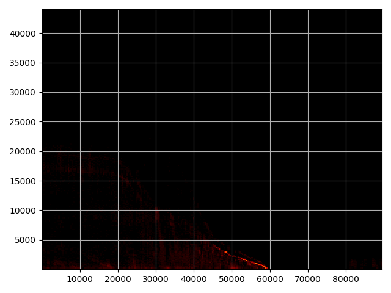

Note
Go to the end to download the full example code.
TLE Production Per Satnum#
Plotting TLE production as a function of satnum
shape: (195_309_994, 14)
┌──────────────┬──────────┬───────────────┬────────────┬───┬────────────┬────────────┬───────────┬─────────┐
│ NORAD_CAT_ID ┆ INTL_DES ┆ EPOCH ┆ N_DOT ┆ … ┆ AOP ┆ MA ┆ N ┆ REV_NUM │
│ --- ┆ --- ┆ --- ┆ --- ┆ ┆ --- ┆ --- ┆ --- ┆ --- │
│ i32 ┆ str ┆ datetime[μs] ┆ f32 ┆ ┆ f32 ┆ f32 ┆ f32 ┆ i32 │
╞══════════════╪══════════╪═══════════════╪════════════╪═══╪════════════╪════════════╪═══════════╪═════════╡
│ 23126 ┆ 94034C ┆ 2011-06-30 ┆ 0.000098 ┆ … ┆ 142.929703 ┆ 292.332306 ┆ 2.964696 ┆ 16347 │
│ ┆ ┆ 03:02:40.6780 ┆ ┆ ┆ ┆ ┆ ┆ │
│ ┆ ┆ 80 ┆ ┆ ┆ ┆ ┆ ┆ │
│ 20793 ┆ 90081F ┆ 1996-08-01 ┆ 0.000003 ┆ … ┆ 25.184299 ┆ 335.003113 ┆ 14.04906 ┆ 30285 │
│ ┆ ┆ 10:31:00.3158 ┆ ┆ ┆ ┆ ┆ ┆ │
│ ┆ ┆ 40 ┆ ┆ ┆ ┆ ┆ ┆ │
│ 25538 ┆ 88109E ┆ 2023-05-07 ┆ 0.000002 ┆ … ┆ 165.575897 ┆ 122.832603 ┆ 2.23124 ┆ 20067 │
│ ┆ ┆ 20:31:30.5950 ┆ ┆ ┆ ┆ ┆ ┆ │
│ ┆ ┆ 08 ┆ ┆ ┆ ┆ ┆ ┆ │
│ 12848 ┆ 81094 A ┆ 1995-09-21 ┆ 0.000005 ┆ … ┆ 332.491699 ┆ 23.3349 ┆ 13.61797 ┆ 68372 │
│ ┆ ┆ 16:16:09.6925 ┆ ┆ ┆ ┆ ┆ ┆ │
│ ┆ ┆ 44 ┆ ┆ ┆ ┆ ┆ ┆ │
│ 25885 ┆ 99043C ┆ 2016-08-18 ┆ 2.0000e-7 ┆ … ┆ 353.161407 ┆ 167.936905 ┆ 11.391572 ┆ 75180 │
│ ┆ ┆ 22:15:01.4598 ┆ ┆ ┆ ┆ ┆ ┆ │
│ ┆ ┆ 72 ┆ ┆ ┆ ┆ ┆ ┆ │
│ … ┆ … ┆ … ┆ … ┆ … ┆ … ┆ … ┆ … ┆ … │
│ 22963 ┆ 94002A ┆ 2023-09-18 ┆ 0.000001 ┆ … ┆ 181.5298 ┆ 83.468903 ┆ 1.002953 ┆ 10864 │
│ ┆ ┆ 15:40:20.9400 ┆ ┆ ┆ ┆ ┆ ┆ │
│ ┆ ┆ 96 ┆ ┆ ┆ ┆ ┆ ┆ │
│ 14808 ┆ 80056C ┆ 2007-06-18 ┆ 0.000002 ┆ … ┆ 51.852901 ┆ 308.399109 ┆ 14.386169 ┆ 22869 │
│ ┆ ┆ 10:26:21.4218 ┆ ┆ ┆ ┆ ┆ ┆ │
│ ┆ ┆ 24 ┆ ┆ ┆ ┆ ┆ ┆ │
│ 19367 ┆ 71015DS ┆ 2018-06-18 ┆ -3.0000e-7 ┆ … ┆ 20.2453 ┆ 78.481102 ┆ 13.808058 ┆ 51926 │
│ ┆ ┆ 15:09:34.1331 ┆ ┆ ┆ ┆ ┆ ┆ │
│ ┆ ┆ 84 ┆ ┆ ┆ ┆ ┆ ┆ │
│ 7009 ┆ 73109B ┆ 2002-10-02 ┆ 0.000002 ┆ … ┆ 147.604401 ┆ 212.634506 ┆ 13.765618 ┆ 44408 │
│ ┆ ┆ 13:12:44.0026 ┆ ┆ ┆ ┆ ┆ ┆ │
│ ┆ ┆ 56 ┆ ┆ ┆ ┆ ┆ ┆ │
│ 9799 ┆ 76126Z ┆ 1996-03-08 ┆ -5.8000e-7 ┆ … ┆ 203.753494 ┆ 151.171097 ┆ 12.718703 ┆ 23876 │
│ ┆ ┆ 18:36:24.1876 ┆ ┆ ┆ ┆ ┆ ┆ │
│ ┆ ┆ 80 ┆ ┆ ┆ ┆ ┆ ┆ │
└──────────────┴──────────┴───────────────┴────────────┴───┴────────────┴────────────┴───────────┴─────────┘
[44042 40525 29922 ... 1 1 1]
[25544 6073 20436 ... 2308 2314 5653]
[76]
import twomillionlines as tm
import matplotlib.pyplot as plt
import numpy as np
import colorcet as cc
import matplotlib.pyplot as plt
df = tm.get_df()
print(df)
nodes, inv, counts = np.unique(df['NORAD_CAT_ID'].to_numpy(), return_inverse=True, return_counts=True)
del df
max_counts = counts[np.argsort(-counts)]
max_nodes = nodes[np.argsort(-counts)]
n_snoopi_tles = max_counts[max_nodes==59563]
print(max_counts)
print(max_nodes)
print(n_snoopi_tles)
plt.scatter(np.arange(max_counts.size), max_counts, s=1)
plt.show()
plt.hist2d(nodes, counts, bins=250, cmap=cc.cm["fire"].copy())
plt.tight_layout()
plt.grid()
plt.show()
Total running time of the script: (1 minutes 30.017 seconds)